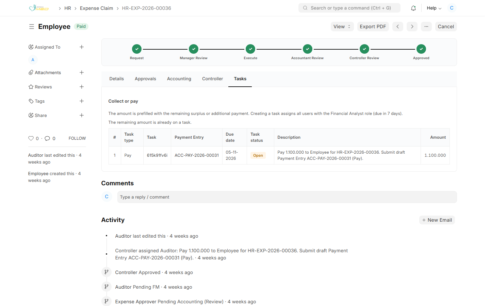
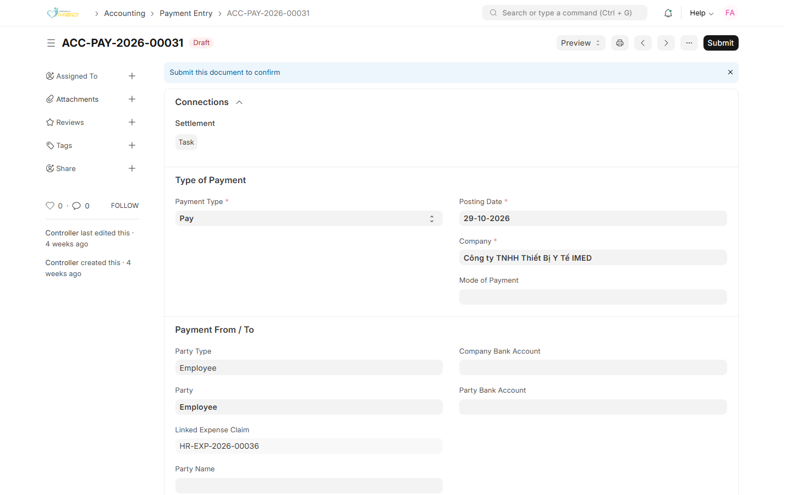

Khi nào làm
Làm sau khi Kiểm Soát Trưởng Final Approve — thanh quy trình ở bước Đã được phê duyệt.
Tổng hợp chi phí trên phiếu cho biết còn phải thu hồi (tạm ứng thừa so với số được duyệt) hoặc chi thêm cho nhân viên (số được duyệt lớn hơn tạm ứng đã chi). Chỉ một trong hai hướng áp dụng cho từng phiếu.
- Thu (Collect) — nhân viên trả lại phần thừa; hệ thống tạo chứng từ Receive.
- Chi (Pay) — công ty trả thêm cho nhân viên; hệ thống tạo chứng từ Pay.
Tạm ứng trước khi đi làm (khi phiếu còn Triển Khai): chi đề nghị tạm ứng — luồng khác, hệ thống tự tạo việc khi Kiểm Soát Trưởng duyệt tạm ứng.
Kiểm Soát Trưởng — tạo việc trên tab Tasks
Đăng nhập Kiểm Soát Trưởng. Mở đề nghị thanh toán đã duyệt cuối → tab Tasks (tiếng Việt thường ghi Việc).
- Khu vực Thu hoặc trả (Collect or pay) hiển thị số còn lại — mặc định điền đủ phần cần thu hoặc cần chi.
- Kiểm tra số tiền (có thể chia nhiều lần nếu còn phần chưa giao việc).
- Nhấn Tạo Task và Payment Entry (Create Task and Payment Entry).
Hệ thống tạo một công việc (Task), một chứng từ bản nháp (Payment Entry) kiểu Thu hoặc Chi, và gán cho mọi user có vai Chuyên viên tài chính. Bảng phía dưới liệt kê từng dòng: loại, mã Task, mã chứng từ, hạn, trạng thái.


Chuyên viên tài chính — thu / chi và nộp chứng từ
Đăng nhập Chuyên viên tài chính (demo: Financial Analyst). Nhận công việc qua danh sách Công việc (Task) hoặc mở chứng từ từ mã trên bảng Tasks của phiếu (nếu có quyền xem).
- Đọc mô tả việc — loại Thu hay Chi, số tiền, mã chứng từ bản nháp.
- Mở Payment Entry (Chứng từ chi/thu) — kiểm tra nhân viên, số tiền, liên kết đề nghị thanh toán.
- Điền hình thức thanh toán, tài khoản ngân hàng công ty / nhân viên nếu chuyển khoản.
- Thực hiện thu hoặc chi thực tế với nhân viên, rồi nhấn Submit trên chứng từ.

Không đổi số tiền khác với việc được giao trừ khi Kiểm Soát Trưởng tạo việc mới với số phù hợp.
Sau khi nộp chứng từ
- Dòng trên bảng Tasks chuyển sang đóng; công việc liên kết hoàn tất.
- Phần còn lại cần thu/chi trên phiếu giảm; nếu vẫn còn, Kiểm Soát Trưởng tạo thêm việc.
- Khi mọi việc quyết toán đã xong, đề nghị thanh toán đi tới trạng thái hoàn tất theo quy trình (đóng phiếu).